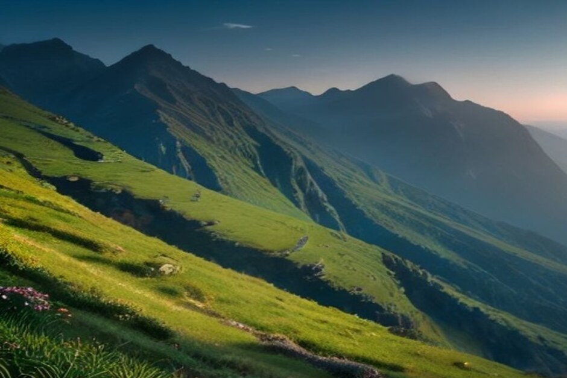
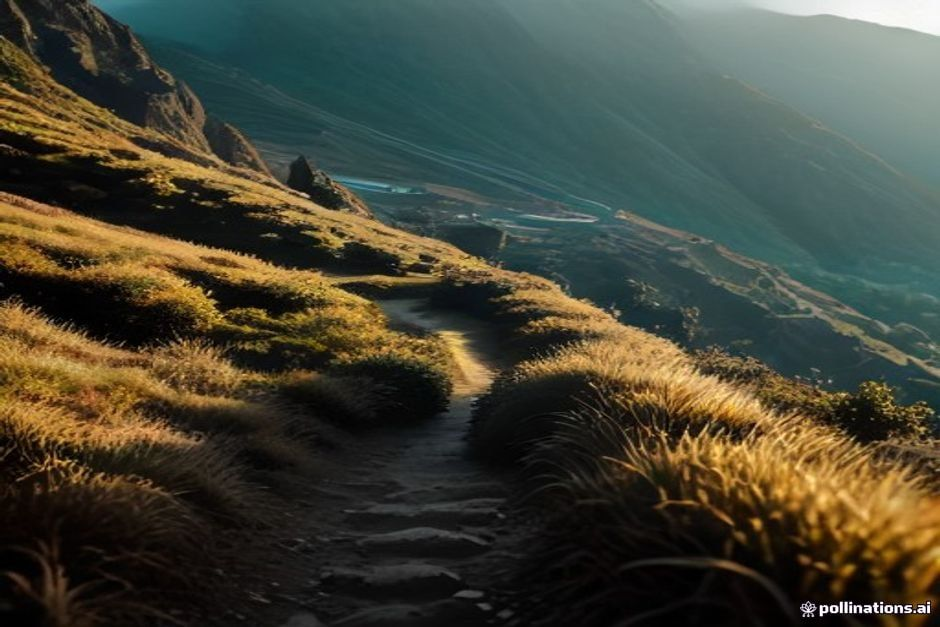

Si busca rutas por Madeira, enseguida se topa con dos nombres: la Levada do Furado y el amanecer en Pico do Arieiro. Son buenas ideas, pero la isla tiene cientos de kilómetros de senderos y no todos son para todo el mundo. Esta guía de senderismo en Madeira reúne diez rutas, las agrupa según el tipo de caminante que es usted y le avisa de lo que casi nadie cuenta antes de salir: las reservas, los túneles sin luz y los tramos con precipicio.
Antes de elegir: tres cosas que conviene saber
La primera es la reserva. Desde 2026, todos los senderos PR numerados de Madeira (el PR1, el PR6, el PR8, el PR9, el PR10 y el PR11, entre otros) exigen una franja horaria reservada en el portal oficial SIMplifica, gratuita en unos casos y de pago en otros. Los paseos municipales por levadas que no están clasificados como PR, como la Levada Nova o la Levada do Norte, por lo general no la necesitan.
La segunda: en temporada alta, reserve con unos días de antelación. La tercera: el tiempo en la montaña cambia mucho más rápido que en la costa. Mire la previsión de las alturas esa misma mañana y no se fíe del cielo de Funchal.
En la mochila, calzado cerrado con buen agarre, una capa ligera impermeable aunque la costa prometa sol, agua, una linterna frontal para los túneles y la confirmación de la reserva guardada en el móvil, por si se pierde la cobertura en altura.
Senderismo en Madeira para estrenarse: dos paseos llanos
Vereda dos Balcões (PR11), desde Ribeiro Frio
Es la ruta que le recomendaríamos a cualquiera que dude de si el senderismo en Madeira es para él. El PR11 sigue la Levada da Serra do Faial durante unos 1,5 km por un bosque denso de laurisilva, casi sin desnivel, y termina en un balcón de roca con una vista abierta de los picos centrales. Con la parada en el mirador, la mayoría vuelve al aparcamiento en menos de 90 minutos. Eso sí, necesita la reserva gratuita en SIMplifica, como cualquier otro PR.

Levada Nova, de Arco da Calheta a Ponta do Sol
Un paseo llano entre bancales de plataneras en la soleada costa suroeste. Recibe solo una fracción de la gente que se agolpa en las rutas famosas del interior. No es un PR, así que no hay que reservar nada: llegue, siga el canal de agua y disfrute de un par de horas tranquilas, con el mar a la vista en lugar de laurisilva.
Levadas con agua: las cascadas de Rabaçal
Levada das 25 Fontes (PR6)
Es la ruta con la que abre cualquier guía, y lo merece. Son unos 9 km de ida y vuelta desde la Casa Florestal do Rabaçal, por un camino de levada mayormente llano, hasta un anfiteatro natural cubierto de musgo que alimentan decenas de pequeños manantiales. La reserva cuesta unos 3 € por adulto. El agua está fría: la mayoría de la gente se limita a meter los pies.
Levada do Risco (PR6.1)
Comparte el primer tramo con las 25 Fontes y luego se separa. En menos de una hora por trayecto llega a la cascada de caída única más alta de Madeira. La pega es un túnel sin iluminar de unos 800 metros. Lleve linterna frontal: cruzarlo solo con la luz del móvil se hace largo.
Trekking en Madeira con túneles y precipicios
Aquí la dificultad no la marca solo la distancia. Los túneles sin luz y los tramos estrechos sobre el barranco hacen que estas rutas se sientan más serias de lo que dice el papel.
Vereda do Caldeirão Verde (PR9), Queimadas
Sale del Parque Forestal das Queimadas, cerca de Santana, y recorre unos 6,5 km de ida (13 km, ida y vuelta) a través de cuatro túneles volcánicos sin iluminar, hasta una poza verde al pie de una cascada de 100 metros. Está clasificada como fácil a moderada, pero los pasos expuestos sobre el barranco la hacen más exigente de lo que parece. La reserva cuesta unos 4,50 € por persona.
Ampliación al Caldeirão do Inferno (PR9.1)
Al final del Caldeirão Verde, otros 45 minutos a una hora llevan a una segunda cascada, más remota, que la mayoría de los excursionistas de un día se salta. Por eso está más tranquila. A cambio, el camino se estrecha más y a veces se cierra tras desprendimientos: compruebe su estado en SIMplifica por separado y no la intente si llega cansado de los primeros 6,5 km.
Levada do Furado (PR10), de Ribeiro Frio a Portela
Con unos 11 km de ida, es la más larga de esta lista y la que desengaña a quien esperaba otro paseo tranquilo por una levada. Cruza laurisilva y varios túneles, con caídas expuestas a un lado. A la mayoría le lleva entre 4 y 5 horas, más el transporte de vuelta desde Portela. Aquí hace falta paso seguro más que en cualquier otra ruta de la lista, salvo la última.
La ruta más dura: PR1, de Pico do Arieiro a Pico Ruivo
La cresta entre el tercer y el primer pico más altos de Madeira tiene unos 7 km de ida y unos 500 metros combinados de subida y bajada. Cruza varios túneles volcánicos sin luz y tramos estrechos con caídas verticales a ambos lados. Tras los daños de los incendios, reabrió en 2026 y ahora se hace en un solo sentido, desde Pico do Arieiro, con reserva en SIMplifica por 10,50 € por persona. Los residentes y los menores de 12 años van gratis, previo registro.
No es una ruta para hacer con mal tiempo ni con vértigo. Para quien puede, es la mejor vista de montaña de la isla.
Una ruta sin sombra: Ponta de São Lourenço (PR8)
Es el reverso de las rutas de laurisilva: 8 km de ida y vuelta por una cresta volcánica pelada, con el océano a ambos lados y nada de sombra en todo el recorrido. Está clasificada como fácil a moderada, pero el sol y el viento la endurecen. La reserva cuesta unos 4,50 € por adulto. El tramo final hasta Ponta do Furado lleva años cerrado por riesgo de desprendimientos.
Senderos en Madeira junto al mar: Levada do Norte en Cabo Girão
Este tramo de la Levada do Norte recorre lo alto del acantilado sobre Cabo Girão y baja hacia Fajã dos Padres. Mezcla camino de bosque con vistas al mar que casi ninguna levada del interior ofrece. No pertenece al sistema PR, así que no hay reserva que gestionar.
Termina cerca de la única cala de la lista a la que también se llega por mar. Fajã dos Padres es una parada habitual de la excursión privada en barco con Chifbay: la excursión de día sale del Marina do Funchal, Pantalán C, a las 10:00 o a las 14:00, con paradas en Câmara de Lobos y Cabo Girão, baño y tablas de paddle en Fajã dos Padres. Si dispone de coche de alquiler para moverse entre los dos puntos, puede bajar andando por la mañana y bañarse desde el barco por la tarde. Y si prefiere ver los acantilados sin caminar, el crucero al atardecer llega hasta Cabo Girão.

¿Cuál elegir? Resumen rápido
- Sin experiencia o con niños: Balcões (PR11) o Levada Nova.
- Agua y cascadas: 25 Fontes (PR6) y, si quiere algo más, Risco (PR6.1).
- Sin reservar: Levada Nova y Levada do Norte, tramo de Cabo Girão.
- Un día largo y exigente: Furado (PR10) o Caldeirão Verde con su ampliación.
- Máxima dificultad y mejores vistas: PR1.
- Sol, viento y geología: Ponta de São Lourenço (PR8).
La costa le da el Atlántico. Los senderos le dan todo lo que Madeira construyó para llevar su agua hasta él.
Elija la ruta que elija, reserve su franja con antelación en temporada alta, lleve linterna para los túneles y vuelva a mirar la previsión de la montaña antes de salir. Para organizar el resto del viaje, tiene más ideas en nuestra guía de excursiones en barco por Madeira y en la información práctica.